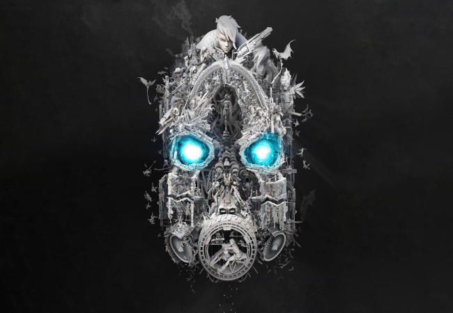

Hvað er Borderlands
Borderlands is a game that happens in the distant future of the year 2864, several colonization ships head to a planet on the edge of the galaxy: Pandora. The colonists are drawn there in search of a better life as well as vast mineral resources that are said to be on the planet, free for the taking.

Some time after settling, the colonists discover that the planet offers little aside from decrepit alien ruins. When the companies mining the planet leave, they let loose the criminals they had employed as forced labor and left any other colonists there. Some of the settlers seek to get rich quick by discovering alien technology, most others are just trying to survive. After seven Earth years, the planet's slow orbit brings a transition from winter to spring, and many dangerous, horrifying creatures begin to emerge from hibernation, making Pandora even more dangerous. A beacon of hope for the remaining colonists emerges in the form of a mysterious alien Vault carved in the side of a mountain. This Vault is said to contain vast stores of alien technology and secrets. The only problem is that the people who discovered the Vault were completely wiped out by some sort of protective force, with the only evidence of their discovery being a scattered radio transmission, proclaiming the Vault's majesty, but not its location. The stories of this wealth has sparked renewed interest in Pandora, and corporations and treasure hunters have begun to return to the wastelands to try and claim the treasures of the Vault.